第 5 回 グラフとアルゴリズム¶
所要時間の目安: 3.5 時間 / 前提: 第 1〜4 回
この回のゴール¶
依存関係を グラフ (頂点と辺) として表し、辞書で実装できる。
深さ優先探索 (DFS) を、再帰と反復の両方で書ける。
循環 と 強連結成分 (SCC) の関係を説明し、Tarjan のアルゴリズム を、追跡しながら理解できる。
Graph.cyclesを、1 行ずつ説明できる。アルゴリズムの 計算量 と、再帰の限界 を説明できる。
トポロジカル順序 (層への分け方) を書ける。
1. グラフとは¶
グラフ は、頂点 (node) と、それをつなぐ 辺 (edge) の集まりです。 モジュールの依存を、「A が B を使う」を A → B の辺 として表すと、有向グラフ になります。

用語 |
意味 |
|---|---|
頂点 (node) |
モジュール |
有向辺 (edge) |
A が B を |
出次数 / 入次数 |
その頂点から出る辺の数 / その頂点に入る辺の数 |
経路 (path) |
辺をたどって、頂点から頂点へ行く道 |
循環 (cycle) |
出発した頂点に、戻ってこられる 経路 |
隣接リスト: 辞書で表す¶
グラフの表し方で、最もよく使うのが 隣接リスト です。「各頂点 → その頂点から行ける頂点の集まり」の辞書です。
# 実行できる
graph = {
"cli": {"confluence", "doctor"},
"doctor": {"confluence", "mmdc"},
"mermaid": {"mmdc"},
"confluence": set(),
"mmdc": set(),
}
print("cli の依存先:", sorted(graph["cli"]))
print("辺の数:", sum(len(v) for v in graph.values()), "/ 頂点の数:", len(graph))
print("入次数 (使われる数):", {n: sum(n in v for v in graph.values()) for n in sorted(graph)})
# 出力
cli の依存先: ['confluence', 'doctor']
辺の数: 5 / 頂点の数: 5
入次数 (使われる数): {'cli': 0, 'confluence': 2, 'doctor': 1, 'mermaid': 0, 'mmdc': 2}
頂点を キー に、辺の行き先を 集合 にします。集合なので、同じ辺の重複 が自然に消えます。
辞書の引きは、ほぼ一定の時間 (O(1)) です。「この頂点の隣は？」が、すぐ分かります。
structure_map.Graph は、各モジュールが持つ「依存先」から、辺の集合 を作ります。
# 引用: docspipeline/structure_map.py::Graph.edges
def edges(self, kind: str = "import", *, include_root: bool = False) -> set[tuple[str, str]]:
"""依存の組 ``(使う側, 使われる側)`` を返す。
Args:
kind: ``import``・``reference``・``deferred`` のいずれか。
``import`` はモジュール直下で実行される import、
``reference`` はモジュール名と一致する文字列、
``deferred`` は関数の中の import で、呼ばれたときに初めて読み込まれる。
include_root: パッケージ自身 (``__init__``) への依存を含めるか。
``from . import __version__`` のような依存で、図が読みにくくなるので既定では除く。
"""
result = set()
for m in self.modules:
for dst in {"import": m.imports, "reference": m.references, "deferred": m.deferred}[kind]:
if include_root or dst != self.package:
result.add((m.name, dst))
return result
{"import": m.imports, "reference": m.references, "deferred": m.deferred}[kind] は、辞書で分岐を書く 書き方です
(kind の値で、どの集合を使うかを選ぶ。if の連鎖より、短く、表になって読みやすい)。
include_root が偽なら、パッケージ自身 (__init__) への辺を 除きます (from . import __version__ のような辺で、図が読みにくくなるため)。
2. 深さ優先探索 (DFS)¶
DFS は、行けるところまで 深く 進み、行き止まりで 戻って、別の道を試す探索です。

# 実行できる
graph = {
"cli": {"confluence", "doctor"},
"doctor": {"confluence", "mmdc"},
"mermaid": {"mmdc"},
"confluence": set(),
"mmdc": set(),
}
def reachable(graph, start):
"""start から、辺をたどって行ける頂点の集合 (start を含む)。"""
seen = set()
def visit(node):
if node in seen: # すでに来た頂点は、再び訪れない (循環があっても止まる)
return
seen.add(node)
for nxt in sorted(graph[node]):
visit(nxt)
visit(start)
return seen
print("cli が(間接的にも)使う:", sorted(reachable(graph, "cli")))
print("mermaid が使う:", sorted(reachable(graph, "mermaid")))
# 出力
cli が(間接的にも)使う: ['cli', 'confluence', 'doctor', 'mmdc']
mermaid が使う: ['mermaid', 'mmdc']
seen (訪問済みの集合) が、肝心 です。これが無いと、循環があるグラフで、永遠に回り続けます。
逆向きにたどる: 「変えたら、どこに影響するか」¶
mmdc を変えたとき、影響を受けるのは、mmdc を 使っている側 です。辺を 逆向き にして、同じ DFS をします。
# 実行できる
from pathlib import Path
import docspipeline
from docspipeline.structure_map import scan_package
graph = scan_package(Path(docspipeline.__file__).parent)
users = {m.name: set() for m in graph.modules} # 逆向きの隣接リスト
for src, dst in graph.edges():
users[dst].add(src)
def affected_by(target):
seen, stack = set(), [target]
while stack: # 再帰を使わない書き方 (後で説明します)
node = stack.pop()
for user in users.get(node, ()):
if user not in seen:
seen.add(user)
stack.append(user)
return sorted(seen)
for target in ("docspipeline.mmdc", "docspipeline.confluence", "docspipeline.files"):
print(target.split(".")[-1], "を変えると影響:", [n.split(".")[-1] for n in affected_by(target)])
# 出力
mmdc を変えると影響: ['__main__', 'cli', 'doctor', 'mermaid']
confluence を変えると影響: ['__main__', 'cli', 'config', 'doctor']
files を変えると影響: ['__main__', 'cli', 'docstring_coverage', 'scaffold', 'structure_map']
これは 実際のリポジトリの、今の依存 です。保守のとき、「ここを変えて大丈夫か」を、機械で答えられます。
3. 循環とは、なぜ問題か¶
A が B を import し、B が A を import すると、循環 import です。

第 1 回で学んだとおり、import は、読み込んだ時点でコードが実行 されます。
a を読み込む → 先頭で b を読み込む → b の先頭で a を読み込もうとする → まだ a は途中 →
a の名前がまだ無くて、ImportError や、中途半端な状態 になる。順序に依存する、壊れやすい 構造です。
「循環があるか」は、すぐ分かっても、「どのモジュールが、1 つの輪になっているか」を知りたい。 それを答えるのが、強連結成分 です。
4. 強連結成分 (SCC) と Tarjan のアルゴリズム¶
強連結成分: 成分の中のどの 2 頂点も、互いに (行って戻って) 到達できる、最大の 頂点の集まり。

{A, B, C} は互いに行き来できる → 1 つの成分。{D, E} も、別の成分。
C → Dの辺は、成分の 外へ出る だけ (戻れない)。だから、2 つは 別の成分。大きさ 2 以上 の成分が、循環です。大きさ 1 の成分 (単独の頂点) は、循環ではありません。
アルゴリズム: DFS に、2 つの数を持たせる¶
Tarjan のアルゴリズム (R. E. Tarjan, 1972) は、DFS を 1 回 するだけで、全ての強連結成分を求めます。 各頂点に、2 つの数を付けます。
名前 |
意味 |
|---|---|
|
訪問した順番 (0, 1, 2, ...)。1 度決めたら変わらない |
|
その頂点から、たどれる範囲で、最も小さい |
成分の根の見つけ方: DFS から戻るとき、low == index なら、その頂点が 成分の根 です
(自分より前の頂点には、戻れなかった = 成分は、ここで閉じる)。
訪問した頂点を スタック に積んでおき、根が見つかったら、根まで取り出す と、それが 1 つの成分になります。

実際に動かして、追跡する¶
次のグラフ (上の図と同じ) で、アルゴリズムを ログつき で動かします。
A → B → C → A、C → D、D → E → D。
# 実行できる
def tarjan_trace(graph):
index, low = {}, {}
stack, on_stack = [], set()
components, log = [], []
counter = 0
def visit(node, depth):
nonlocal counter
pad = " " * depth
index[node] = low[node] = counter
counter += 1
stack.append(node)
on_stack.add(node)
log.append(f"{pad}訪問 {node} index={index[node]}")
for nxt in sorted(graph[node]):
if nxt not in index:
visit(nxt, depth + 1)
low[node] = min(low[node], low[nxt])
log.append(f"{pad}戻り {node} low={low[node]} (子 {nxt} の low={low[nxt]})")
elif nxt in on_stack:
low[node] = min(low[node], index[nxt])
log.append(f"{pad}戻る辺 {node}→{nxt} low={low[node]}")
if low[node] == index[node]:
comp = []
while True:
top = stack.pop()
on_stack.discard(top)
comp.append(top)
if top == node:
break
log.append(f"{pad}根 {node} (low==index) → 成分 {sorted(comp)}")
components.append(sorted(comp))
for node in sorted(graph):
if node not in index:
visit(node, 0)
return components, log
graph = {"A": {"B"}, "B": {"C"}, "C": {"A", "D"}, "D": {"E"}, "E": {"D"}}
components, log = tarjan_trace(graph)
print("\n".join(log))
print("成分:", components)
# 出力
訪問 A index=0
訪問 B index=1
訪問 C index=2
戻る辺 C→A low=0
訪問 D index=3
訪問 E index=4
戻る辺 E→D low=3
戻り D low=3 (子 E の low=3)
根 D (low==index) → 成分 ['D', 'E']
戻り C low=0 (子 D の low=3)
戻り B low=0 (子 C の low=0)
戻り A low=0 (子 B の low=0)
根 A (low==index) → 成分 ['A', 'B', 'C']
成分: [['D', 'E'], ['A', 'B', 'C']]
追跡を、順に読みましょう (上の出力と照らしてください)。
Aを訪問 (index=0) → 隣のBへ →Cへ (index=2)。Cの隣のAは、訪問済みで、スタックにいる → 戻る辺。low[C] = index[A] = 0。Cの隣のDへ →Eへ。Eの隣のDは、スタックにいる →low[E] = index[D]。Eから戻るとlow[D] = low[E]になる。Dはlow == index→ D が根。スタックからDまで取り出す → 成分 {D, E}。Cに戻る。low[C]は0のまま (Dは別の成分なので、影響しない)。B・Aへ戻りながら、lowが0に伝わる。Aでlow == index (0)→ A が根。スタックからAまで取り出す → 成分 {A, B, C}。
本物の実装と、同じ結果になるか¶
同じ依存を持つパッケージを作り、DocsPipeline の Graph.cycles に読ませて、比べます。
# 実行できる
import tempfile
from pathlib import Path
from docspipeline.structure_map import scan_package
edges = {"a": ["b"], "b": ["c"], "c": ["a", "d"], "d": ["e"], "e": ["d"]}
with tempfile.TemporaryDirectory() as tmp:
pkg = Path(tmp) / "pkg"
pkg.mkdir()
(pkg / "__init__.py").write_text("")
for name, targets in edges.items():
body = "".join(f"from . import {t}\n" for t in targets)
(pkg / f"{name}.py").write_text(body)
cycles = scan_package(pkg).cycles()
print(cycles)
# 出力
[['pkg.a', 'pkg.b', 'pkg.c'], ['pkg.d', 'pkg.e']]
{A, B, C} と {D, E} の 2 つが、見つかりました。次に、その実装を 1 行ずつ 読みます。
Graph.cycles を読む¶
# 引用: docspipeline/structure_map.py::Graph.cycles
def cycles(self) -> list[list[str]]:
"""``import`` の循環を、強連結成分として返す (無ければ空)。
パッケージ自身 (``__init__``) を経由する循環も含める。``__init__`` が子を import し、
子が ``from pkg import X`` する形は、循環 import の典型だから。
"""
graph: dict[str, set[str]] = {m.name: set() for m in self.modules}
for src, dst in self.edges(include_root=True):
graph[src].add(dst)
index: dict[str, int] = {}
low: dict[str, int] = {}
stack: list[str] = []
on_stack: set[str] = set()
found: list[list[str]] = []
counter = 0
def visit(node: str) -> None:
nonlocal counter
index[node] = low[node] = counter
counter += 1
stack.append(node)
on_stack.add(node)
for nxt in sorted(graph[node]):
if nxt not in index:
visit(nxt)
low[node] = min(low[node], low[nxt])
elif nxt in on_stack:
low[node] = min(low[node], index[nxt])
if low[node] == index[node]:
component = []
while True:
top = stack.pop()
on_stack.discard(top)
component.append(top)
if top == node:
break
if len(component) > 1:
found.append(sorted(component))
for name in sorted(graph):
if name not in index:
visit(name)
return sorted(found)
行 |
読み方 |
|---|---|
|
全モジュールを、空の隣接リスト で初期化 (辺の無いモジュールも、頂点として入る) |
|
辺を足す。パッケージ自身 ( |
|
上で説明した 2 つの数。辞書 |
|
スタック (リスト) と、「スタックにいるか」を O(1) で答える集合 |
|
訪問順の番号。内側の関数で書き換えるので |
|
再帰関数。入れ子 にして、外側の変数を、そのまま使う (クロージャ) |
|
隣を 整列して 見る。結果が、実行のたびに変わらない (再現性。集合の順序は、実行ごとに違う) |
|
根の判定 |
|
大きさ 1 の成分は、循環ではない ので、捨てる |
|
成分の中も、整列 (再現性) |
|
成分の並びも、整列 |
自己ループ (a が a を import) は、どうでしょう。_analyze が、runtime.discard(name) で、自分自身を除いている
ので、辺ができません。そもそも、モジュールが自分を import するのは、意味がないからです。
計算量¶
処理 |
時間 |
理由 |
|---|---|---|
辺の収集 ( |
O(V + E) |
全モジュールと、全ての依存を 1 度ずつ見る |
Tarjan ( |
O(V + E) |
各頂点を 1 度だけ 訪問し、各辺を 1 度だけ 見る |
|
O(V log V) と、各隣接の整列 |
再現性のため。支配的ではない |
V は頂点 (モジュール) の数、E は辺 (依存) の数。辺の数に比例 なので、数千のモジュールでも、一瞬です。
5. 再帰の限界と、反復による書き換え¶
Python の再帰には 深さの上限 があります (既定 1000)。依存の鎖が非常に長い グラフで、再帰の DFS は RecursionError になります。
# 実行できる
import sys
chain = {i: [i + 1] for i in range(3000)} # 0 → 1 → 2 → ... → 3000 (長い鎖)
chain[3000] = []
def dfs_recursive(graph, node, seen):
seen.add(node)
for nxt in graph[node]:
if nxt not in seen:
dfs_recursive(graph, nxt, seen)
def dfs_iterative(graph, start):
seen, stack = set(), [start]
while stack:
node = stack.pop()
if node in seen:
continue
seen.add(node)
stack.extend(graph[node])
return seen
print("再帰の上限:", sys.getrecursionlimit())
try:
dfs_recursive(chain, 0, set())
except RecursionError as exc:
print("再帰:", type(exc).__name__)
print("反復: ", len(dfs_iterative(chain, 0)), "個の頂点に到達")
# 出力
再帰の上限: 1000
再帰: RecursionError
反復: 3001 個の頂点に到達
反復 (自前のスタック) なら、深さの制限がありません。Graph.cycles は 再帰で書いてある ので、
理論上は、鎖が 1000 段を超える依存で、落ちます。実際の Python パッケージの依存の深さは、せいぜい数十段なので、
実害は無い、と判断しています。これは、既知の限界 です (演習 2 で、反復版に直します)。
限界を 知っていて、書いておく ことは、保守の大事な仕事です。「問題ない」と決めつけず、 「どの条件で壊れるか」と「なぜ、それを許容したか」を、残します。
6. 入口の候補: 集合の差¶
「どこからも使われていないモジュール」は、入口 (コマンド・拡張・エントリーポイント) の候補です。 使われている頂点の集合 を作り、全体から 引く (集合の差) だけです。
# 引用: docspipeline/structure_map.py::Graph.entry_points
def entry_points(self) -> list[str]:
"""どのモジュールからも使われていないモジュール (入口の候補)。"""
used = {dst for _, dst in self.edges() | self.edges("reference")}
return sorted(m.name for m in self.modules if m.name not in used and m.name != self.package)
self.edges() | self.edges("reference"): 2 種類の辺の 和集合 (|)。{dst for _, dst in ...}: 辺の 行き先 だけを集めた集合 (_は、使わない値の慣習的な名前)。使われていない (
not in used) もののうち、パッケージ自身を除く。
# 実行できる
from pathlib import Path
import docspipeline
from docspipeline.structure_map import scan_package
graph = scan_package(Path(docspipeline.__file__).parent)
print([name.split(".", 1)[1] for name in graph.entry_points()])
# 出力
['__main__', 'config', 'stubs', 'stubs.hou']
__main__・config・stubs.hou などが出ます。これらは、他のモジュールから import されず、
Sphinx (conf.py)・python -m・CLI から、外から 使われます。
7. トポロジカル順序: 依存の「層」に分ける¶
循環が無いグラフ (DAG: 有向非巡回グラフ) では、依存先から順に 並べられます。 「何も使わないもの」を第 0 層、「第 0 層だけを使うもの」を第 1 層、…と分けると、構造の地図 になります。

これは カーンのアルゴリズム (Kahn, 1962) の考え方です: 「依存先が、全部決まったものから、決めていく」。
# 実行できる
from pathlib import Path
import docspipeline
from docspipeline.structure_map import scan_package
def levels(deps):
"""deps: {モジュール: 依存先の集合} (循環が無いこと)。各モジュールの層を返す。"""
remaining = {m: set(d) for m, d in deps.items()}
level, current = {}, 0
while remaining:
ready = sorted(m for m, d in remaining.items() if not d) # 依存先が、全部決まった
if not ready:
raise ValueError("循環があります: " + ", ".join(sorted(remaining)))
for m in ready:
level[m] = current
del remaining[m]
for d in remaining.values():
d.difference_update(ready)
current += 1
return level
graph = scan_package(Path(docspipeline.__file__).parent)
deps = {m.name: set() for m in graph.modules if m.name != "docspipeline"}
for src, dst in graph.edges():
if src in deps and dst in deps:
deps[src].add(dst)
by_level = {}
for name, lv in levels(deps).items():
by_level.setdefault(lv, []).append(name.split(".", 1)[1])
for lv in sorted(by_level):
print("第", lv, "層:", by_level[lv])
try:
levels({"a": {"b"}, "b": {"a"}})
except ValueError as exc:
print(exc)
# 出力
第 0 層: ['confluence', 'diagrams', 'doxygen', 'files', 'guard', 'mmdc', 'prompt', 'stubs', 'stubs.hou']
第 1 層: ['config', 'docstring_coverage', 'doctor', 'mermaid', 'scaffold', 'structure_map']
第 2 層: ['cli']
第 3 層: ['__main__']
循環があります: a, b
循環があると、
readyが 空になる (依存先が決まらないものしか残らない) → 例外にできます。 循環の検出と、層分けは、同じ道具 で答えられます。層の数は、依存の最長の鎖 の長さです。層が浅いほど、構造が平らで、理解しやすい。
8. アルゴリズムの選び方¶
知りたいこと |
アルゴリズム |
計算量 |
|---|---|---|
ここから、行けるものは? (影響範囲) |
DFS / BFS (逆辺なら「使っている側」) |
O(V + E) |
循環はあるか。どれが輪か |
強連結成分 (Tarjan) |
O(V + E) |
循環があるかだけ |
DFS で「いま辿っている道」の再訪を見る / Kahn で残りを見る |
O(V + E) |
依存の順序・層 |
トポロジカルソート (Kahn) |
O(V + E) |
最短の道 (辺の数) |
幅優先探索 (BFS) |
O(V + E) |
どれも O(V + E)。グラフの大きさに 比例 で、速い。選ぶ基準は、計算量でなく、何に答えたいか です。
ハンズオン¶
第 4 節の
tarjan_traceで、自分で作ったグラフ (たとえば、3 つの輪が、1 本の辺で連なるもの) の追跡を、紙に書いて予想してから、実行する。docspipeline map docspipeline --format jsonを実行し、entry_pointsを読む。第 2 節の
affected_byを、docspipeline.configについて実行する。何も影響しない のは、なぜか。 (ヒント:configは、他のモジュールからimportされない。第 6 節の「入口」)
確認問題¶
有向グラフで、「A から B に行けて、B から A にも行ける」関係にある頂点の集まりを、何と呼びますか。
DFS で、
seen(訪問済み) の記録が無いと、何が起きますか。Tarjan のアルゴリズムで、
low[node] == index[node]が、何を意味するか説明してください。Graph.cyclesが、for nxt in sorted(graph[node])と、整列 しているのは、なぜですか。len(component) > 1で、大きさ 1 の成分を捨てる理由は何ですか。再帰の DFS が、危険になるのは、どんなときですか。直し方は。
逆向きの隣接リスト (
users) を作ると、どんな問いに答えられますか。(書く問題) 反復の DFS で、
startから行ける頂点を、訪問した順 にリストで返す関数order(graph, start)を書いてください (隣は、sortedの順に見る。再帰を使わない)。
解答¶
強連結成分 (その中のどの 2 頂点も、互いに到達できる、最大の集まり)。大きさ 2 以上なら、循環。
循環のあるグラフで、同じ頂点を何度も訪れ、永遠に回り続ける (再帰が深くなり、
RecursionError、または無限ループ)。その頂点から、自分より前に訪問した頂点 (スタックにいるもの) へは、戻れなかった こと。 つまり、その頂点が、強連結成分の根 で、スタックから根まで取り出したものが、1 つの成分になる。
集合の反復順序は、実行ごとに違う (文字列のハッシュのランダム化)。整列しないと、 同じ入力でも、結果の 並び が変わり、テストと比較が不安定になる (再現性)。
1 つの頂点だけの成分は、「自分に戻る道」(自己ループ) が無ければ、循環ではない。 全ての頂点が、必ず、大きさ 1 以上の成分に入るので、そのままだと、循環の無い頂点が、全部「循環」として並んでしまう。
依存の鎖が、再帰の上限 (既定 1000) を超える とき (
RecursionError)。自前のスタック (リスト) を使う 反復 に書き換える。「このモジュールを変えたら、どこに影響するか」(使っている側の、推移的な集合)。
例 (実行して確かめてある):
# 実行できる
def order(graph, start):
seen, result, stack = set(), [], [start]
while stack:
node = stack.pop()
if node in seen:
continue
seen.add(node)
result.append(node)
stack.extend(sorted(graph[node], reverse=True)) # スタックは後入れ先出し。逆順に積むと、小さい順に取り出せる
return result
print(order({"a": {"c", "b"}, "b": {"d"}, "c": {"d"}, "d": set()}, "a"))
# 出力
['a', 'b', 'd', 'c']
まとめ¶
概念 |
要点 |
このリポジトリでの例 |
|---|---|---|
グラフ |
頂点と辺。隣接リスト (辞書 + 集合) が基本 |
|
DFS |
訪問済みの集合が肝心。逆辺で影響範囲 |
到達可能・影響範囲 |
循環・SCC |
互いに行き来できる最大の集まり。大きさ 2 以上が循環 |
|
Tarjan |
DFS 1 回。 |
O(V + E) |
再現性 |
集合の順序は不定。 |
|
再帰の限界 |
深さの上限。反復 (自前のスタック) に直せる |
既知の限界 |
層分け |
依存先が決まったものから。循環も検出できる |
Kahn |
次回¶
第 6 回 Sphinx の考え方: 文書を ビルド する仕組み (読む → 解決 → 書く) と、reST / Markdown の基礎を学びます。